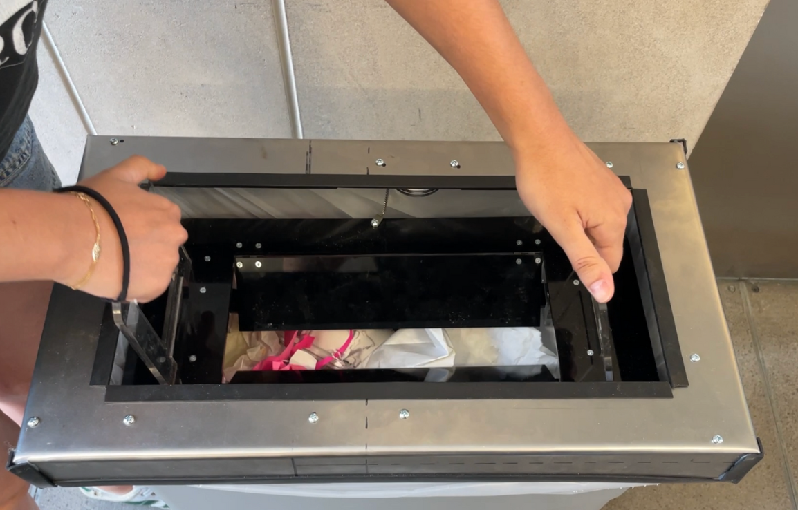
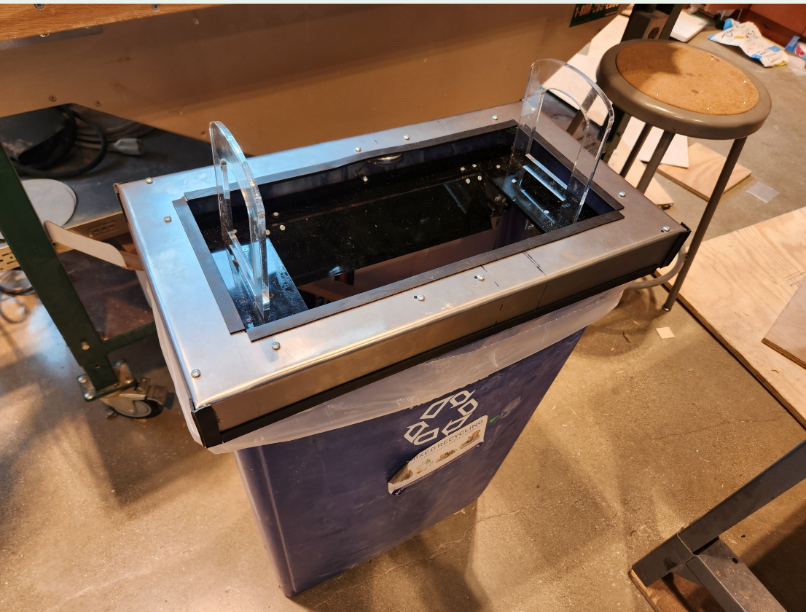
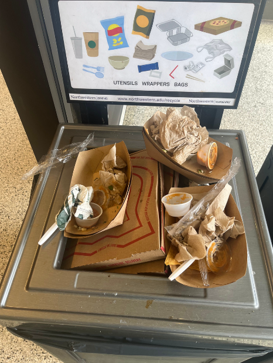
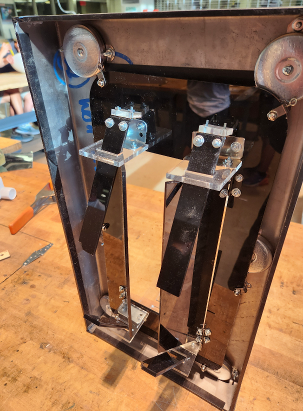
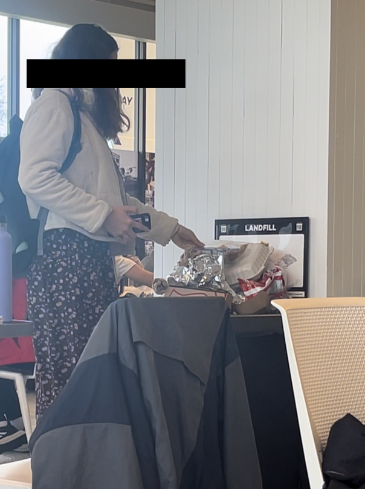

THE SQUISH:
Trash can compacting device
Course: Design Thinking and Communication 2 | Spring 2023

Project Summary
I was a part of a team that designed a trash can compacting device to solve the problem of overflowing bins in public spaces on campus, from bathrooms to dining halls, also alleviating some of the stress that custodians faced. For the class, Design Thinking and Communication, myself and three other engineers were tasked with a “whitespace project,” i.e. we could choose what problem we wanted to tackle. “The Squish” is:


Process
- Ideation: We iterated through over 100 different ideas for our “need” that we wanted to solve, but ultimately chose overflowing trash because it is an often overlooked problem that we faced every day as students, especially noticing the issue in bathrooms and in the student center.
- User observations: We observed how people interacted with overflowing trash cans by going to high traffic areas and taking video footage and noticed users balancing trash on top of precarious piles, creating more mess. We also interviewed custodians to get their perspective on how overflowing cans affected their duties.
- Mockups: We created mockups of our idea and had users, including custodians, test them out to identify what they liked and disliked in our initial design.
- Construction: “The Squish” has three main components that are connected by nuts and bolts: a metal frame, cut out using the water jet, an acrylic flap mechanism with hinges, cut using the CNC laser cutter, and a pulley systems that raises and lowers the compactor.


